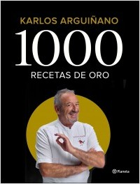

1000 recetas de oro
Editorial: Editorial Planeta
Tematica: Cocina | Chefs
Cocina | Mediaticos
Cocina | Recetas
Coleccion: Planeta Cocina
Numero de paginas: 728

Sinopsis de 1000 recetas de oro:
Tras siete decadas de vida y medio siglo cocinando, Karlos Arguiñano nos brinda un amplio recetario que configura el mejor testimonio de su experiencia y amor por la gastronomia. Mil recetas que son un homenaje a todos los elementos que le han llevado a convertirse en el cocinero de referencia de millones de hogares. Un cuidado y amor unicos por la materia prima, elaboraciones sencillas aptas para todo tipo de cocineros, consejos que dan al plato el toque especial y una propuesta amplia para todo tipo de paladares y ocasiones. Arroz caldoso con tempura de borraja, canutillos de pastel de pescado, bloody mary con berberechos o crema de calabaza con cigalita y beicon... Recetas de elaboracion propia, para disfrutar en familia o con amigos, y de las que emana esa alegria contagiosa que tan bien define su cocina.
Los precios publicados en esta tienda están sujetos a cambios sin previo aviso y solo son aplicables para ventas en línea.
Algunos títulos están sujetos a disponibilidad.
Todos los Derechos Reservados